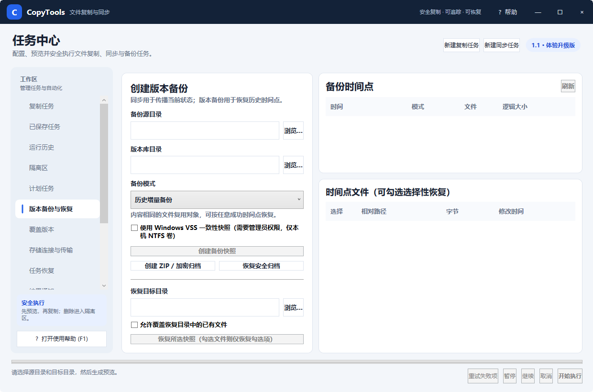

CopyTools 使用帮助版本备份与恢复
版本备份与恢复
同步用于保持目录当前状态一致；版本备份则保存可回到过去的时间点。二者用途不同，可以组合使用。

图 3：左侧创建备份与指定恢复位置，右侧查看时间点并选择文件
创建备份时间点
- 选择“备份源目录”，即要保护的资料目录。
- 选择“版本库目录”。版本库应位于另一块磁盘或独立存储位置。
- 选择备份模式。第一次创建使用完整时间点；日常使用历史增量备份。
- 如源位于本机 NTFS 卷且拥有管理员权限，可选择 Windows VSS 一致性快照，降低打开中文件前后不一致的风险。
- 单击“创建备份快照”，完成后在右上“备份时间点”中出现记录。
恢复整个时间点或部分文件
- 在“备份时间点”列表选中要恢复的时间。
- 右下会列出该时间点的文件；勾选文件可进行选择性恢复，不勾选则按页面提示处理整个快照。
- 选择“恢复目标目录”。默认建议恢复到空目录，先检查后再替换现有资料。
- 如确实需要写入有同名文件的目录，勾选“允许覆盖恢复目录中的已有文件”。
- 单击“恢复所选快照”，完成后检查状态与运行历史。
ZIP 与加密归档
“创建 ZIP / 加密归档”可以把备份打成便于搬运的单个文件。加密归档需要设置密码；密码只用于本次归档操作，不会写入普通任务日志。
密码不可恢复：丢失加密归档密码后，CopyTools 不能绕过加密读取内容。请把密码保存到可信密码管理器，并在归档完成后执行一次试恢复。
覆盖版本
复制任务启用“保留版本”后，被覆盖的目标文件会出现在“覆盖版本”工作区。它适合恢复某一个误覆盖文件，不替代完整的时间点备份。